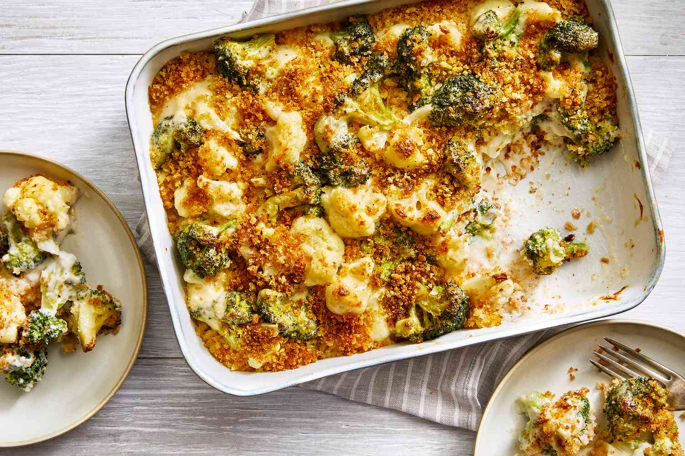

Brocolli Cauliflower Casserole Recipe

A delicious homemade broccoli cauliflower casserole recipe for you to enjoy!
This broccoli and cauliflower casserole is always a hit! The croutons on top
give it that crunchy dimension that everyone will love.
Ingredients
- 2 cups broccoli
- 2 cups cauliflower
- 2 large eggs
- 1 cup shredded Cheddar cheese, divided
- 1/2 cup mayonnaise
- 1/2 cup chopped onion
- 1/2 cup butter, melted
- 1 (15 ounce) package seasoned croutons, crushed
Steps
- Preheat the oven to 350 degrees F (175 degrees C)
- Place broccoli and cauliflower in separate saucepans,
cover with water, and bring to a boil; cook until tender, 3 to 4 minutes.
Drain and arrange in an 11x7-inch baking dish.
- Beat eggs in a bowl until creamy; stir in 1/2 cup Cheddar cheese, mayonnaise,
and onion and pour over vegetables. Pour melted butter on top and sprinkle with
remaining 1/2 cup Cheddar cheese. Scatter crushed croutons evenly on top.
- Bake in the preheated oven until browned and bubbling, about 40 minutes.